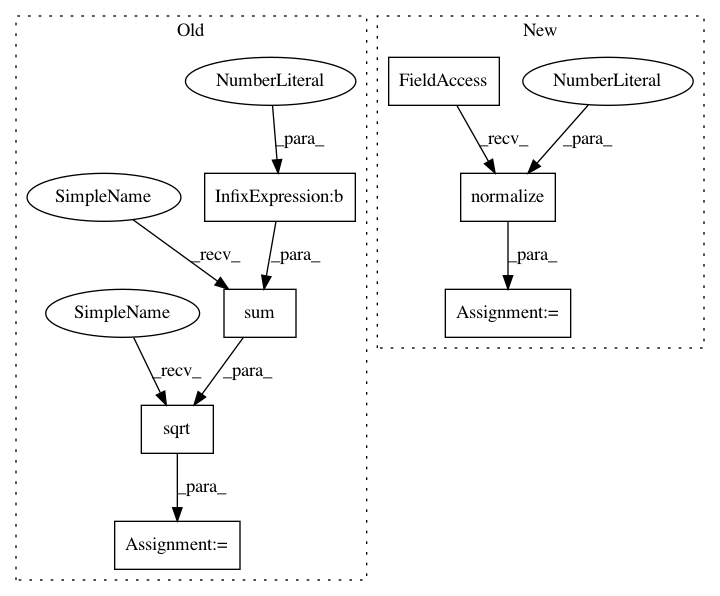

d2e6c662f76f312901ce7329082a0f157492a828,librosa/filters.py,,chroma,#,93
Before Change
wts = np.exp(-0.5 * (2*D / np.tile(binwidthbins, (n_chroma, 1)))**2)
// normalize each column
wts /= np.tile(np.sqrt(np.sum(wts**2, 0)), (n_chroma, 1))
// Maybe apply scaling for fft bins
if octwidth is not None:
wts *= np.tile(
After Change
wts = np.exp(-0.5 * (2*D / np.tile(binwidthbins, (n_chroma, 1)))**2)
// normalize each column
wts = librosa.util.normalize(wts, norm=2, axis=0)
// Maybe apply scaling for fft bins
if octwidth is not None:
wts *= np.tile(
In pattern: SUPERPATTERN
Frequency: 3
Non-data size: 7
Instances
Project Name: librosa/librosa
Commit Name: d2e6c662f76f312901ce7329082a0f157492a828
Time: 2013-12-24
Author: brm2132@columbia.edu
File Name: librosa/filters.py
Class Name:
Method Name: chroma
Project Name: librosa/librosa
Commit Name: f980c4b0546f3dc5af5f03048f9a3d854da62a2d
Time: 2014-11-07
Author: brian.mcfee@nyu.edu
File Name: librosa/filters.py
Class Name:
Method Name: logfrequency
Project Name: librosa/librosa
Commit Name: 8afa25c763a9ee408de6f98492a71b7d721a68b0
Time: 2014-01-21
Author: brm2132@columbia.edu
File Name: librosa/filters.py
Class Name:
Method Name: constant_q
Project Name: librosa/librosa
Commit Name: d2e6c662f76f312901ce7329082a0f157492a828
Time: 2013-12-24
Author: brm2132@columbia.edu
File Name: librosa/filters.py
Class Name:
Method Name: chroma